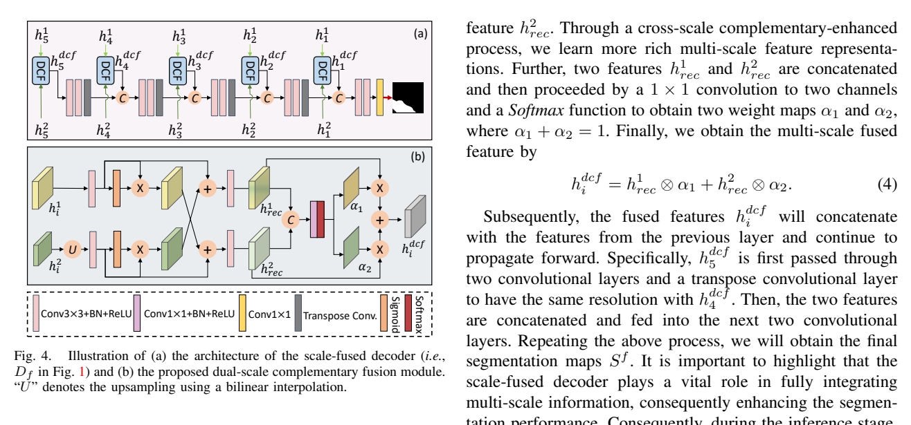
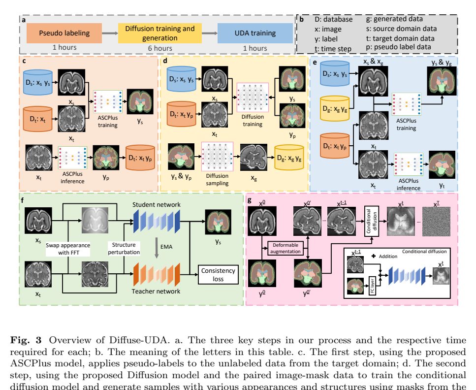
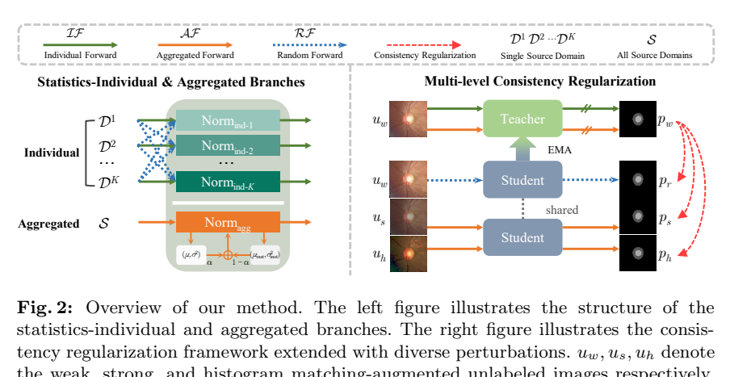
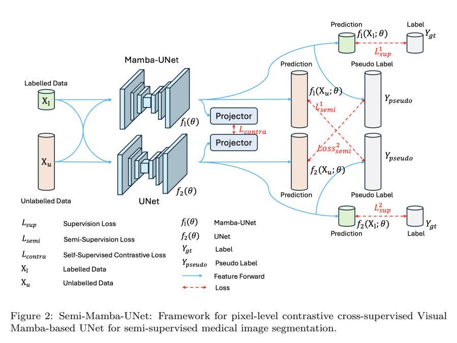

原论文流程图 · Figure 4 · PDF 第 5 页

Fig. 4. Illustration of (a) the architecture of the scale-fused decoder (i.e., segmentation maps Sf. It is important to highlight that the D f inFig.1)and(b)theproposeddual-scalecomplementaryfusionmodule. scale-fused decoder plays a vital role in fully integrating “U”denotestheupsamplingusingabilinearinterpolation. multi-scale information, consequently enhancing the segmen- 原文来源
论文针对半监督医学图像分割：像素级标注昂贵，而病灶在形状、大小和位置上变化大，现有半监督方法（如 Mean Teacher、UA-MT、URPC、CLCC 等）虽利用一致性约束，但作者认为它们没有充分挖掘尺度信息 [p. 1][p. 2]。因此提出 DEC-Seg，试图同时利用多尺度特征、跨尺度预测一致性和跨生成重建一致性来利用无标注数据 [p. 1][p. 2]。
网络由共享编码器 E、两个尺度专用解码器 D1（原始尺度）和 D2（1/2 下采样尺度）、一个尺度融合解码器 Df，以及两个生成网络 G1、G2 组成 [p. 3]。有标注数据同时以原图和下采样图输入，计算监督损失与尺度增强一致性；无标注数据及其扰动版本用于尺度增强一致性、尺度感知扰动一致性和跨生成一致性 [p. 3]。最终推理使用 Df 的输出 Sf 作为分割结果 [p. 5]。
CFA 取编码器相邻两层特征 Fi 与 Fi+1，先做 1×1 卷积再拼接得到 Fcat，经 3×3 卷积+BN+ReLU 得 Fcat′；对 Fcat′ 做全局平均池化与两层点卷积（通道压缩比 r）生成通道注意力权重 W，再与 Fcat′ 逐元素相乘并加残差，最后经 3×3 卷积得到聚合特征 [p. 4]。公式 (1)(2) 给出了该过程；作者称其可融合不同感受野的上下文信息 [p. 4]。
对无标注图 Xu 及其下采样图 X2u=Down(Xu)，分别经 E 与 D1/D2 得到 S1u、S2u；将 S1u 的 argmax 下采样后作为 S2u 的伪标签，将 S2u 的 argmax 上采样后作为 S1u 的伪标签，用交叉熵计算双向一致性损失 LSCu [p. 4, 公式(3)]。有标注数据同样计算 LSC_l，扰动图像计算 LSC_p，三者之和为 LSC [p. 5][p. 6]。
Df 的结构与尺度专用解码器基本相同，但用 DCF 模块替代编码器跳连特征 [p. 5]。DCF 对另一尺度上采样特征先做 3×3 卷积与 Sigmoid 得到权重 W2，再与卷积后的上采样特征相乘得到互补特征 h2com；将互补特征加到原尺度特征上并平滑，得到 h1rec；对称地得到 h2rec；二者拼接后经 1×1 卷积与 Softmax 得到权重 α1、α2（α1+α2=1），融合特征为 hdcf=h1rec⊗α1+h2rec⊗α2 [p. 5, 公式(4)]。图 4 展示了 Df 与 DCF 的结构 [p. 5]。
扰动 P 为随机颜色抖动；对原图、下采样图和融合解码器输出分别计算 S1u 与 S1p、S2u 与 S2p、Sfu 与 Sfp 的 MSE，得到 LSPC [p. 5, 公式(5)]。跨生成一致性中，融合解码器的 logit zfu、zfp 分别送入 G2、G1，重建 X̂u=G2(zfu)、X̂p=G1(zfp)，损失为 LCC=MSE(X̂p,Xu)+MSE(X̂u,Xp) [p. 5, 公式(6)]。作者主张该约束让网络关注结构与语义信息并纠正颜色扰动带来的偏差 [p. 5-6]。
监督损失为三个解码器输出与真值的 CE 与 Dice 平均之和：LS=Lsup(S1l,Yl)+Lsup(S2l,Down(Yl))+Lsup(Sfl,Yl)，其中 Lsup=(LCE+LDice)/2 [p. 6, 公式(7)]。总损失 Ltotal=LS+LSPC+LSC+LCC [p. 6, 公式(8)]。论文未给出各项损失的权重系数。
作者声称的贡献包括：提出 DEC-Seg 框架；提出 CFA 融合跨层特征；提出 SC 与 CC 两种一致性约束；提出 DCF 融合两个尺度专用解码器特征 [p. 2]。我的解读是：CFA 与 DCF 属于多尺度特征融合设计，SC 与 CC 属于一致性正则化；真正的新意在于把“尺度专用解码器 + 融合解码器 + 跨生成重建”组合进半监督分割，而非单一模块的全新数学形式。
息肉：CVC-ClinicDB 与 Kvasir 随机选 1,450 张作训练集，其余与 ETIS、CVC-ColonDB 构成测试集；10%（145 张）或 30%（435 张）作标注，其余为无标注 [p. 6]。脑肿瘤：TCGA 低级别胶质瘤，1,090 张训练、283 张测试，10%/30% 标注 [p. 6]。皮肤病变：ISIC-2018，2,594 张训练、1,000 张测试，10%/30% 标注 [p. 6]。
实现：PyTorch，单张 RTX3090；息肉与皮肤输入 352×352，脑 MRI 输入 256×256；训练 10,000 次迭代，batch size 6（3 标注+3 无标注），SGD，初始学习率 1e-2，poly 策略 [p. 6]。评价指标为 mDice、mIoU、Fwβ、Sα、MAE [p. 6]。对比方法十种：MT、DAN、UA-MT、URPC、CLCC、SLC-Net、MC-Net+、CDMA、SCP-Net、MCF；所有方法 backbone 改为 Res2Net，且不做数据增强，训练 10,000 次迭代；CLCC 保持其 320×320 设置 [p. 6]。
CVC-ClinicDB/Kvasir（表 I）：DEC-Seg 在 10% 标注下 mDice 0.836/0.859，30% 下 0.859/0.893；对应 mIoU 0.774/0.787 与 0.804/0.830 [p. 7]。作者称在 10% 和 30% 下均优于对比方法 [p. 6-7]。
未见数据集（表 II）：CVC-ColonDB 10% mDice 0.648、30% 0.721；ETIS 10% 0.592、30% 0.634 [p. 7]。作者报告在 CVC-ColonDB 30% 标注下较 SCP-Net 的 mDice/mIoU 分别提升 3.9%/4.1% [p. 7]。
脑 MRI（表 III）：10% 标注 mDice 0.626、mIoU 0.533；30% 标注 0.767/0.671；作者称相较第二名在 10% 下提升 5.2%/5.5%，30% 下提升 2.8%/4.8% [p. 8]。
ISIC-2018（表 IV）：10% 标注 mDice 0.867、mIoU 0.796；30% 标注 0.875/0.801；作者称相较 MCF 在 10% 下提升 1.3%/3.0%，30% 下提升 1.6%/3.0% [p. 8]。
消融在 Kvasir 与 CVC-ColonDB、30% 标注下进行（表 V）[p. 9-10]。Baseline 仅含尺度感知扰动一致性：Kvasir mDice 0.850、ColonDB 0.612；加 SC 后 0.873/0.637；再加 DCF 为 0.882/0.675；再加 CC 为 0.888/0.702；加 CFA 为 0.888/0.698；全部组合为 0.893/0.721 [p. 10]。作者据此称 SC 带来 4.1% mDice 提升、CC 将 ColonDB 从 0.675 提到 0.702、CFA 在尺度变化大的 ColonDB 上有效 [p. 9]。表 VI 比较 DCF 与“Basic”拼接融合：Kvasir 0.893 vs 0.885，ColonDB 0.721 vs 0.710（mDice）[p. 10]。图 9 展示 D1、D2、Df 三解码器的定性比较，作者称融合解码器边界更准 [p. 9-10]。
支持的结论：在作者设定的统一 backbone、无数据增强、相同迭代次数条件下，DEC-Seg 在多个数据集和标注比例上取得较高 mDice/mIoU，消融也显示各模块有正向贡献 [p. 7-10]。
局限与缺失证据：论文未报告多次运行的均值/方差或显著性检验；未报告参数量、FLOPs、推理时间，而作者自己承认模型因三个解码器和两个生成网络复杂度更高 [p. 10]；未给出各损失项权重、生成器训练细节、伪标签是否停止梯度等关键复现信息；对比方法虽统一 backbone，但优化器与学习率沿用各自原配置，可能影响公平性 [p. 6]；仅在 2D 任务验证，作者也将其列为限制 [p. 10]。此外，表 I 中 MC-Net+ 的 Sα 值“848”疑似排版缺失小数点，无法确认 [p. 7]。
已报告：PyTorch、RTX3090、输入尺寸 352×352（息肉/皮肤）与 256×256（脑 MRI）、10,000 次迭代、batch 6（3+3）、SGD、初始学习率 1e-2、poly 策略、backbone Res2Net、对比方法不做数据增强 [p. 6]。未报告：损失权重、生成器 G1/G2 的具体训练目标与优化器、伪标签是否 detach、数据划分随机种子、评价代码细节、训练/推理耗时与显存。复现时应先按上述设置搭建 E/D1/D2/Df/G1/G2，再实现公式 (1)-(8)，但损失权重需自行调参或联系作者。
原论文流程图 · Figure 3 · PDF 第 20 页

Fig. 3 Overview of Diffuse-UDA. a. The three key steps in our process and the respective time required for each; b. The meaning of the letters in this table. c. The first step, using the proposed ASCPlusmodel,appliespseudo-labelstotheunlabeleddatafromthetargetdomain;d.Thesecond step, using the proposed Diffusion model and the paired image-mask data to train the conditional 原文来源
论文针对 3D 医学图像分割中的无监督域适应（UDA）：源域有体素级标注，目标域无标注，且两域存在成像设备、参数或模态差异导致的域偏移，使源域训练的模型在目标域性能显著下降 [p. 2]。作者指出，现有 UDA 方法主要分两类：半监督式（教师-学生、伪标签、对比学习）与特征对齐式（GAN、数据增强）；这些方法在伪标签不可靠或结构差异大时效果受限 [p. 2]。作者的核心观察是：若能获得接近专家水平的目标域伪标签，就能逼近“目标域有标注”的上界；而扩散模型可生成高质量图像-标签对，从而同时缓解外观与结构差异 [p. 2-3]。
Diffuse-UDA 分三步： 1. 用 ASCPlus 为目标域无标注图像生成伪标签（Fig. 3c）[p. 4, p. 20]； 2. 用源域图像-标签对与目标域图像-伪标签对联合训练条件扩散模型（Fig. 3d）[p. 4, p. 20]； 3. 以源域标签（及目标域伪标签）为条件采样生成目标风格图像-掩码对，与源域数据、伪标签数据一起训练 ASCPlus，最终在目标域预测（Fig. 3e）[p. 4, p. 20]。
ASCPlus 采用教师-学生 + EMA。学生从源域图像 $x_s$ 与频率变换后的源域图像 $x_s^{ft}$ 学习监督损失 $L_{seg}$，并通过 $L_{asc}$ 实现外观与结构一致性（Fig. 3f）[p. 4, p. 20]。
外观一致性（自适应频率变换）：对源图像做 FFT 得到振幅 $F_A(x_s)$ 与相位 $F_P(x_s)$，将振幅低频部分与目标图像振幅按掩码 $M$ 交换，再 iFFT 回图像： - $F_A(x_s^{ft}) = M \cdot F_A(x_t) + (1-M) \cdot F_A(x_s)$（式 1） - $x_s^{ft} = F^{-1}([F_A(x_s^{ft}), F_P(x_s)])$（式 2）[p. 10-11]
掩码由参数 $\beta$ 控制，$\beta$ 根据源/目标灰度直方图欧氏距离自适应确定：$\beta = \max(0.1, d_{hist}(x_s,x_t)/d_{max} \cdot \alpha)$，$\alpha \in [0.5,1.5]$（式 3）[p. 11]。监督损失为 $L_{seg}=L_{dice}(P_s,y_s)+L_{dice}(P_{s^{ft}},y_s)$（式 4）[p. 11]。
双视图外观一致性：教师与学生分别对 $x_t$ 与 $x_t^{fs}$ 预测并交叉约束，$L_{appcon}$ 为两方向 L2 距离之和（式 5）[p. 11]。
结构一致性：对 $x_t$ 与 $x_t^{fs}$ 施加 CutMix 结构扰动 $sp$，要求教师-学生预测一致，得到 $L_{strcon}$；与 $L_{appcon}$ 合并为 $L_{asc}$（式 6）[p. 11-12]。教师权重按 EMA 更新 $\theta't=\gamma\theta'{t-1}+(1-\gamma)\theta_t$（式 7），总损失 $L_{all}=L_{seg}+\lambda L_{asc}$（式 8）[p. 12]。
伪标签生成：用 ASCPlus 预测 $y_t=f_\theta(x_t)$（式 9），采用置信度阈值，并集成最后 10 个 epoch 的结果提升伪标签质量 [p. 12-13]。
采用 DDPM，余弦噪声调度，前向过程 $x_t=\sqrt{\bar\alpha_t}x_0+\sqrt{1-\bar\alpha_t}\epsilon$（式 10）[p. 14]。条件 $c$（掩码或伪掩码）经线性层 $f_e$ 编码后与噪声图像拼接：$\hat x_t=[x_t, f_e(c)]$（式 11，文中称 [.,.] 为逐点相加）[p. 14]。反向采样为式 12，U-Net 预测噪声，训练损失为 L1：$L_{MAE}=\frac{1}{n}\sum|\epsilon_i-\epsilon'_i|$（式 13）[p. 14]。
形变增强：作者实现基于 PyTorch/CUDA 的形变模块 $f_{deform}$，结合仿射与弹性变换（Algorithm 1，[p. 17]）。训练时仅对源域图像-掩码对施加形变以保证稳定；采样时对源域标签与目标域伪标签均施加形变（式 14-16）[p. 15]。
PyTorch 2.0.1，NVIDIA A800 80GB，CUDA 12.1；分割骨干 SegResNet；扩散模型 UNet + GroupNorm，batch size 1，100 epochs，Adam，采样步数 250；下游任务 Adam，初始学习率 1e-4，batch size 4（两域各半），100 epochs；所有实验报告三次运行均值 [p. 15]。胎儿脑图像重采样至 128×128×128 [p. 15]。扩散模型具体参数：batch size 1、100,000 次迭代、输入 128×128、64 通道、1 个残差块、250 时间步、每 1000 次迭代保存样本、每 2 步梯度累积、EMA 衰减 0.995、Adam 学习率 1e-5 [p. 15]。
作者主张的贡献：(i) 提出 Diffuse-UDA 三阶段框架，将扩散模型作为即插即用的 UDA 增强模块；(ii) 提出 ASCPlus，通过自适应频率变换与结构一致性提升伪标签质量；(iii) 引入形变增强与掩码采样扩增，提升生成多样性与数据规模 [p. 2-4]。
我的解读：核心新颖点在于“用扩散模型生成目标风格图像-标签对”这一数据合成路径，以及将伪标签质量、双域联合训练、形变扩增三者串联；ASCPlus 本身是对 ASC [59] 的扩展（增加自适应 β 与集成），扩散模型结构本身并非新设计。
FeTA（Table 1，[p. 23]）：Diffuse-UDA 异常脑 DSC 81.3±0.4、NSD 84.0±0.7；正常脑 DSC 84.5±0.5、NSD 88.8±0.9。UB（目标域监督）分别为 81.1±0.2 / 83.0±0.2 与 83.6±0.3 / 87.8±0.4；LB 为 73.1±0.6 与 79.0±0.3。对比方法中 ASC 为 76.6±0.1 / 81.5±0.1，PL 为 74.3±0.4 / 79.1±0.2。作者报告 Ours vs UB 的 p 值为 0.482、0.076、0.056、0.153，Ours vs 第二名均 <0.005 [p. 23]。
MMWHS（Table 2，[p. 23]）：CT→MR DSC 84.1±0.6、ASD 2.0±0.2；MR→CT DSC 88.3±0.3、ASD 1.6±0.1。UB 为 84.5±1.6 / 2.1±0.4 与 87.5±0.5 / 1.5±0.6；LB 仅 21.1 / 38.5。对比方法中 FSUDAv2 为 75.5 / 86.1，A&D 为 71.4 / 86.6±0.9 [p. 23]。Ours vs UB 的 p 值为 0.665、0.675、0.076、0.789；Ours vs 第二名在 CT→MR DSC 上 <0.005，MR→CT DSC 上 0.036 [p. 23]。
扩散生成组件（Table 3，[p. 24]）：固定 87 个样本（47 源 + 40 目标）训练扩散模型。M1 仅源域 75.3±0.5；M2 加源掩码 75.8±0.4；M3 加目标伪掩码 76.6±0.3；M4 加形变 77.0±0.2；M5 加采样扩增 78.2±0.2；M6 使用全训练集并采样 4 次达 81.1±0.2。作者称 DSC 从 M1 到 M6 逐步提升 [p. 8, p. 24]。
ASCPlus 组件（Table 4，[p. 25]）：M1 仅源域 75.3±0.5；M2 加 $L_{seg}(x_s^{ft})$ 76.6±0.2；M3 加 $L_{appcon}(x_t)$ 77.3±0.3；M4 加 $L_{appcon}(x_t^{fs})$ 77.9±0.2；M5 加 $L_{strcon}$ 78.5±0.1；M6 加 AdaFFT 78.6±0.2；M7 加 Ensemble 78.9±0.1 [p. 25]。
数据比例与形变分析（Fig. 4，[p. 21]）：源/目标比例 1:3、1:1、3:1 均有显著提升；仅用目标伪标签训练无增益 [p. 8]。仅对源域或目标域加形变会降低 DSC 但提升 NSD；两域同时加形变反而性能下降 [p. 9]。伪标签质量越高（PL < ASC < ASCPlus），最终性能越好 [p. 9]。ASCPlus 训练中加形变无益 [p. 9]。
生成过程分析（Fig. 5，[p. 21]）：扩大生成样本量（x0→x1→xn）带来提升；对源与目标数据同时施加形变显著增强性能 [p. 9]。
t-SNE 显示 Diffuse-UDA 使源/目标特征簇更交织，类别特征簇间距更大、混色更少（Fig. 2c-d，[p. 19]）[p. 6-7]。
支持的结论：在 FeTA 与 MMWHS 两个基准上，Diffuse-UDA 的 DSC/NSD/ASD 均优于所列 UDA 与 SSL 基线，且与 UB 的差异在统计上不显著（p 值 0.056–0.789）；消融表显示各组件逐步贡献，尤其采样扩增（M5→M6 提升 2.9 DSC）与伪标签质量（Fig. 4d-e）[p. 23-25]。
需谨慎之处： - “超过 UB”应理解为在三次运行均值上的小幅超出（如 FeTA 异常脑 81.3 vs 81.1），作者也报告了与 UB 比较的 p 值，不能据此断言方法系统性优于目标域监督。 - Table 1/2 中多个基线仅报告 DSC 或缺失 NSD/ASD（以“-”表示），无法全面比较 [p. 23]。 - 扩散模型训练细节存在不一致：正文称 100 epochs，具体参数又称 100,000 iterations [p. 15]；未报告扩散模型参数量、推理耗时（Fig. 3a 提及时间分配但正文未给数值）。 - 形变增强在训练与采样阶段的应用范围不同，Fig. 4b-c 显示两域同时形变会降 DSC，与 Fig. 5b 的结论需结合具体设置理解 [p. 9]。 - 未报告失败案例、计算成本或跨中心外部验证。
已报告：SegResNet 骨干；扩散 UNet（GroupNorm、64 通道、1 残差块、250 时间步、余弦调度）；batch size 1、100,000 迭代、Adam 1e-5、EMA 0.995、每 2 步梯度累积；下游 Adam 1e-4、batch size 4、100 epochs；图像 128×128×128；三次运行均值；FeTA 47/40/40 与 MMWHS 16/13/3/4 划分 [p. 4-5, p. 15]。
未报告或无法确认：ASCPlus 的 EMA 衰减率 γ、损失权重 λ、置信度阈值具体数值、伪标签集成细节、形变模块的旋转/缩放/位移场具体参数、扩散模型采样时的引导尺度、以及 Table 1/2 中缺失基线数字 [p. 11-15, p. 23]。复现时需自行调参并注意上述不一致。
本篇未找到可可靠提取的方法流程图，请查看原文 PDF。
论文针对半监督医学图像分割：标注昂贵，需在少量标注图像与大量未标注图像下取得准确分割[p. 1]。作者认为现有方法对未标注数据的潜力利用不充分，尤其特征级扰动“尚未被充分探索”[p. 1]。现有路线包括：基于 GAN 的对抗训练、一致性正则与自训练、协同教学/互学习、Mean Teacher 类方法，以及 FixMatch/UniMatch 式弱-强一致性[p. 1–3]。作者指出，FixMatch 类方法高度依赖精心设计的图像级扰动方案，而在医学图像上寻找合适扰动空间需要专家知识与试错成本[p. 4]。因此动机是：在 FixMatch 框架内同时引入图像级与特征级扰动，并用知识蒸馏把多路扰动输出组织成教师-学生关系，以扩大扰动空间而不增加参数与计算量[p. 2, p. 5]。
给定标注集 Dl 与未标注集 Du，对未标注输入 xu 施加弱扰动 Aw 与强扰动 As：xw=Aw(xu)，xs=As(Aw(xu))[p. 3, Eq. 1]。FixMatch 的弱流为 xu→Aw→e→d→pw；作者在编码器 e 与解码器 d 之间插入特征扰动 Pr，得到 xw→e→Pr→d→pwr 与 xs→e→Pr→d→psr[p. 4, Eq. 4–7]。Pn 表示无特征扰动，对应 pw[p. 4]。
作者把不同扰动强度视为“能力不同的编码器”：ew=Aw→e 为弱扰动编码器，es=Aw→As→e 为强扰动编码器，且 ew 预测明显更准[p. 4]。类似地，特征扰动 Pw、Ps 作用于解码器输入，得到三个解码器 dn（无扰动）、dw（弱特征扰动）、ds（强特征扰动）[p. 4]。于是有 2 个等效编码器与 3 个等效解码器，输出记为 pij，其中 ei∈{ew,es}，dj∈{dn,dw,ds}[p. 4, Eq. 9]。pwn 扰动最小、最准确，被指定为教师[p. 4–5]。
教师蒸馏损失对四个扰动流（pww、pws、psw、pss）做蒸馏：Ltkd = (1/Bu) Σ 1(max(pwn)≥τ) Σ_i Σ_j H(pwn, pij)[p. 5, Eq. 10]。其中 H 为熵/交叉熵式差异，1(·) 为置信阈值指示函数，τ 为阈值，max 沿通道取最大置信度，Bu 为未标注批大小[p. 4–5]。
解码器蒸馏损失在同一解码器内由弱特征扰动输出指导强特征扰动输出：Ldkd = (1/Bu) Σ_j 1(max(pwj)≥τ) H(pwj, psj)，j∈{w,s}[p. 5, Eq. 11]。
此外引入两个图像级强扰动流 xs1、xs2（扰动程度相同但参数不同），由 pwn 监督，构成 Lip；Lsup 为 Dice 与交叉熵[p. 5]。总损失：Ltotal = Lsup + Lip + (1−η)Ltkd + ηLdkd[p. 5, Eq. 12]。η 平衡两种蒸馏损失。
作者称多编码器/解码器会增加前向传播成本，因此采用等价实现：图像级扰动在 CPU 上于编码器前完成；将不同编码器的中间特征按 Batch 维堆叠为 2B×H×W×C，以并行方式处理特征扰动，避免迭代中额外计算[p. 5]。Fig. 2 给出整体结构，Fig. 3 对比 CrossMatch 与 FixMatch 的扰动流[p. 5]。作者强调不增加参数开销[p. 5]。
作者声称的贡献有四点：(1) 提出基于知识蒸馏与图像扰动的一致性正则框架；(2) 把不同前向流等效为不同编码器/解码器，将 KD 引入半监督分割；(3) 在同一解码器间计算相邻 Self-KD 损失，以桥接教师-学生能力差距；(4) 在四个基准上显著优于 SOTA[p. 2]。
我的解读：核心新颖点是把“扰动强度”重新解释为“模型能力差异”，从而在单模型内构造教师-学生层级；与 UniMatch 的双流特征扰动相比，CrossMatch 增加了跨解码器的“Cross”蒸馏（pww/pws 指导 psw/pss）[p. 5, p. 10]。但整体仍属 FixMatch 框架的扩展，作者也自述“draws on the basic framework of FixMatch without any bells and whistles”[p. 2]。
四个数据集：LA（3D MRI，80/20 划分，各向同性 0.625³ mm³）、ACDC（3D MRI）、Pancreas-CT（82 例 3D CT，重采样至 1.0 mm，HU 裁剪 [−125,275]）、ISIC 2018（3,694 张皮肤镜 RGB 图，训练/验证/测试为 2,594/100/1,000，缩放至 256×256，训练集随机取 5%/10%/20%）[p. 5–6]。
骨干：LA 与 Pancreas-CT 用 V-Net，ACDC 与 ISIC 2018 用 U-Net[p. 6]。优化：LA 用 AdamW 训练 9000 迭代，Pancreas-CT 12000 迭代；ACDC 与 ISIC 用 SGD 分别 300 与 200 epoch[p. 6]。批大小：LA/Pancreas-CT 为 4，ACDC/ISIC 为 12，且每批标注与未标注样本数相等[p. 6]。裁剪：LA 112×112×80，Pancreas-CT 96×96×96，ACDC 与 ISIC 256×256[p. 6]。η：Pancreas-CT 0.2，其余 0.3；τ：LA/Pancreas-CT 0.85，ACDC/ISIC 0.95[p. 6]。特征扰动为标准 dropout，弱/强丢弃率 25%/75%[p. 6]。3D 任务报告最终权重而非训练中最佳权重[p. 6]。
LA（Table I）：5% 标注（4 例）Dice 89.98、Jaccard 81.84、95HD 5.90、ASD 1.85；10%（8 例）Dice 91.33、Jaccard 84.11、95HD 5.29、ASD 1.53；20%（16 例）Dice 91.61、Jaccard 84.57、95HD 5.36、ASD 1.57[p. 7]。作者称 10% 时超过全监督 V-Net 用 100% 标注的 91.14% Dice[p. 7–8]。对比方法包括 UA-MT、SASSNet、DTC、MC-Net、URPC、SS-Net、MC-Net+、DMD、BCP、UniMatch、CAML、RCPS、BSNet 等[p. 7]。
ACDC（Table II）：5%（3 例）Dice 88.27、Jaccard 80.17、95HD 1.53、ASD 0.46；10%（7 例）Dice 89.08、Jaccard 81.44、95HD 1.52、ASD 0.52[p. 8]。作者称 3-label 设置 Dice 提升 3.89%[p. 8]。
Pancreas-CT（Table III）：10%（6 例）Dice 79.69、Jaccard 66.93、95HD 11.18、ASD 2.64；20%（12 例）Dice 83.13、Jaccard 71.46、95HD 5.20、ASD 1.88[p. 8]。作者称 10% 时 Dice 比 SOTA 高 3.07%，20% 时 95HD 改善 2.3%[p. 8]。
ISIC 2018（Table IV）：5%（129 例）Dice 84.10、Jaccard 74.69、95HD 28.60、ASD 11.28；10%（259 例）Dice 84.71、Jaccard 75.81、95HD 25.56、ASD 9.91；20%（518 例）Dice 85.43、Jaccard 76.68、95HD 23.77、ASD 9.34[p. 9]。作者称 20% 时距离指标超过全监督方法[p. 8]。
Table V：CrossMatch 单次迭代 210 ms，参数量 9.443 M、FLOPs 187.409 G，与 V-Net 相同；对比 UA-MT 273 ms、SASSNet 501 ms、DTC 545 ms、MC-Net 486 ms、MC-Net+ 1269 ms、CAML 1057 ms、BCP 379 ms[p. 9]。作者称时间从数据迁移至 CUDA 到反向传播结束，取 1k 迭代平均[p. 9]。
Ldkd 组件（Table VI）：在 LA 5%/10%/20% 标注下，同时加入 Lwdkd 与 Lsdkd 的 Dice 分别为 89.98/91.33/91.61；仅加 Lsdkd 为 89.80/89.82/91.25；仅加 Lwdkd 为 89.28/85.66/91.46；均不加为 89.26/86.18/90.98[p. 9]。作者称 5%、10%、20% 下加入两项分别提升 Dice 0.71%、5.14%、0.63%[p. 9]。
Ltkd 组件（Table VII）：10% 标注下，使用全部四项监督（pww、psw、pws、pss）Dice 91.33；去掉 Cross 项（仅 pww、pss）为 90.24；依次去掉单项在 88.55–91.03 之间[p. 10]。作者称 Cross 操作优于 UniMatch 的双流扰动[p. 10]。
Lip 组件（Table VIII）：应用两个强扰动流监督时性能最佳[p. 10]。
Lsup 类型（Table IX）：10% 标注下 CE 91.01、Dice 91.08、Mix 91.33[p. 10]。
Ldkd 损失类型（Table X）：Dice 损失最佳；KL 在 T=1 与 T=2 下不稳定，CE 较差[p. 10]。
η（Table XI）：10% 标注下 η=0.30 最佳（Dice 91.33、Jaccard 84.11、95HD 5.29、ASD 1.53），η=0.40 降至 87.25[p. 11]。
τ（Fig. 6）：LA 上 τ 过低或过高均下降，最终固定 0.85[p. 11]。
Dropout 类型（Fig. 7）：标准 Dropout3D 在三个数据划分上最佳，AlphaDropout 与 FeatureAlphaDropout 次之；作者推测后两者扰动过强、扩大解码器性能差距，不利于知识传递[p. 11]。
解码器性能差距（Table XII）：10% 标注下，Bottom/Top 为 0.250/0.750（差距 0.5）时 Dice 91.33 最佳；差距 0 时 91.20；差距 0.75 时 90.22[p. 11]。
作者分析两个低 Dice 案例：Pancreas-CT 一例 Dice 80.98%，主因胰尾与邻近组织强度相似、结构小且多变；LA 一例 Dice 87.11%，主因心房附件附近部分容积效应导致边界模糊[p. 11–12]。作者提出多尺度分析、形状约束或主动轮廓等改进方向，但为公平比较未改动 V-Net[p. 12]。
支持的结论：在作者所列基线与相同数据划分下，CrossMatch 在四个数据集多数指标上领先；LA 10% 标注 Dice 91.33 超过全监督 V-Net 100% 标注的 91.14[p. 7–8]；参数量与 FLOPs 与 V-Net 相同、迭代时间 210 ms 低于所列多模型方法[p. 9]；消融支持 Ldkd、Cross 项、双强扰动流、Dice 蒸馏损失与 η=0.3 的作用[p. 9–11]。
需谨慎之处：作者称“without increasing computational costs”[p. 1]，但 Table V 显示 210 ms 仍高于 V-Net 的 22 ms，应理解为不增加参数/FLOPs 而非不增加训练时间[p. 9]。部分表格（Table VII、VIII、X、XII）在文本中排版错乱，数字与勾选条件的对应关系只能依据可辨认部分，无法完全核对[p. 10–11]。ACDC 5% 设置中 CrossMatch 的 ASD 0.46 优于 10% 的 0.52，作者未解释[p. 8]。ISIC 上相对 FixMatch/UniMatch 的提升较小（如 5% Dice 84.10 vs 83.44/83.15）[p. 9]。作者自述局限：大规模 3D 多前向传播资源仍高；复杂结构、模糊边界处性能不足[p. 12]。缺少与更多 2024 年方法的系统比较、跨中心外部验证与统计显著性检验。
已报告：PyTorch 实现；V-Net（LA、Pancreas-CT）与 U-Net（ACDC、ISIC）；优化器与迭代/epoch 数；批大小 4/12 且标注与未标注各半；裁剪尺寸；η 与 τ 按数据集取值；dropout 类型与 25%/75% 丢弃率；损失为 Dice+CE、Dice 蒸馏；3D 用滑窗评估、ACDC 合并切片、ISIC 用 2D 指标；指标为 Dice、Jaccard、95HD、ASD[p. 6]。代码链接在摘要中给出。
未报告或无法确认：学习率、权重衰减、预热/学习率调度、数据增强的具体参数（旋转/翻转/颜色等）、xs1 与 xs2 的具体扰动差异、随机种子与重复次数、LA/ACDC 的病例级划分细节、Pancreas-CT 的划分方式、ISIC 随机划分的具体种子、推理滑窗步长与批大小、GPU 型号与显存、KL 温度以外的蒸馏实现细节[p. 6, p. 9–11]。复现时应优先按上述已报告设置搭建，并对未报告项做敏感性说明。
原论文流程图 · Figure 2 · PDF 第 5 页

Fig.2: Overview of our method. The left figure illustrates the structure of the statistics-individual and aggregated branches. The right figure illustrates the consis- tencyregularizationframeworkextendedwithdiverseperturbations.u ,u ,u denote w s h 原文来源
论文研究半监督域泛化（SSDG）医学图像分割：训练数据来自多个源域（多家医疗机构），每个源域只有少量体素级标注，另有大量无标注图像；目标是在未见域上取得良好分割。作者指出，现有域泛化（DG）方法通常依赖各源域的完整标注，而半监督方法虽能利用无标注数据，却未显式处理多域分布偏移 [p. 2]。
作者的核心观察是：不同机构之间的域偏移主要表现为灰度差异，人眼可能不明显，但会被批归一化（BN）层捕获为显著的特征统计量差异（均值、方差）[p. 2–3]。若所有源域共用一个BN，则每个域的最优归一化统计量与实际使用的统计量不匹配，归一化特征受损，最终降低伪标签质量（图1c）[p. 3]。已有SSDG工作如CACPS主要通过输出后处理筛选高置信像素来改善伪标签，作者认为这是“二次修正”，不如在预测过程中直接缓解域偏移 [p. 3]。
训练集含K个源域，每个域有标注部分和无标注部分 [p. 5]。基线损失为 L = Lx + Lu，其中Lx为交叉熵与Dice损失，Lu为无监督一致性损失 [p. 5–6]。教师模型由学生权重经EMA更新；对弱增强无标注图像Aw(u)生成伪标签，监督强增强图像As(u)的预测，采用one-hot伪标签和置信度阈值τ：Lu = 1(max(pw) ≥ τ)·H(p̂w, f(As(u))) [p. 6]。
SIB：每个源域d拥有独立BN层，其余网络参数共享。对域d的批激活xd，按通道均值μd和方差σd²归一化，并使用该域专属仿射参数γd、βd [p. 6, 式(4)–(5)]。作者只让弱增强图像经过SIB，因为弱增强主要是几何变换，对风格和统计属性影响小；强增强会显著改变统计量，不适合SIB [p. 7]。
SAB：面向所有域及强增强样本，采用批统计与实例统计的线性组合：μagg = α⊙μd + (1−α)⊙μinst，σ²agg = α⊙σd² + (1−α)⊙σinst²，α为逐通道可学习混合系数 [p. 7, 式(6)]。其动机是用实例统计抑制实例级风格信息，同时用批统计保留实例间判别性 [p. 7]。
一致性学习：对弱增强无标注图像，分别用SIB（individual-forward, IF）和SAB（aggregated-forward, AF）预测，并取平均作为伪标签：pw = (pIFw + pAFw)/2，p̂w = argmax(pw) [p. 7, 式(7)–(8)]。学生模型仅用SAB对强增强图像预测，计算Ls = H(p̂w, ps) [p. 7, 式(9)]。有标注图像同时训练SIB和SAB，使用交叉熵与Dice损失 [p. 7]。
图像级：除强增强（颜色抖动、模糊）外，引入直方图匹配Ah，将无标注图像灰度分布对齐到其他域，形成“weak-to-style”一致性：ph = fAF(Ah(u))，Lh = H(p̂w, ph) [p. 8, 式(10)]。作者认为颜色抖动提供随机多样性，直方图匹配利用已知源域信息桥接分布差距，两者互补 [p. 8]。
特征级：提出随机BN选择（RandBN）。对域d的激活xd，以概率p随机选择另一分支d′的仿射参数γd′、βd′替换原参数，但均值方差仍用域d的统计量：Normrand(xd) = γd′(xd−μd)/√(σd²+ε) + βd′，d′≠d [p. 9, 式(11)]。反向传播时停止BN仿射参数梯度，避免干扰SIB [p. 9]。对应随机前向（RF）损失Lr = H(p̂w, pr) [p. 9, 式(12)]。
总无监督损失：Lu = Ls + λhLh + λrLr [p. 9, 式(13)]。推理阶段丢弃SIB，仅保留SAB，使参数量与常规模型相近 [p. 9]。
作者声称的贡献有三点：①提出SIB与SAB协同的多分支SSDG框架，既保护伪标签又提升泛化；②在图像级和特征级引入多级扰动流模拟域偏移，扩展训练分布；③在三个医学分割基准上验证优于经典与SOTA方法 [p. 3–4]。
我的解读：论文的新颖点主要在于把“BN统计量差异”从负面因素转化为可 exploited 的正向信号——SIB用于缓解，SAB与扰动用于利用。与CACPS等后处理式伪标签筛选相比，该方法在归一化层面直接干预，思路更直接；但整体仍建立在mean-teacher与弱到强一致性框架上，属于结构改进与扰动设计的组合创新。
采用leave-one-domain-out：选一个域为未见测试域，其余为训练源域；各源域使用相同的无标注划分 [p. 10]。骨干为U-Net，PyTorch，两张RTX 3090；三个数据集训练迭代数分别为2×10⁴、2×10⁴、4×10⁴，batch size分别为12、10、18；AdamW，学习率1×10⁻³，权重衰减0.01；λh=1.0，λr=0.2；弱增强为随机旋转和翻转，强增强为颜色抖动和模糊 [p. 10–11]。评价指标为Dice（越高越好）和ASD（越低越好）[p. 11]。
Prostate（30%标注）：Ours平均Dice 88.73%、ASD 1.93；CACPS为86.47%、2.12；SS-Net为80.73%、3.08；BCP为80.52%、6.88 [p. 10, 表1]。作者称相对最佳SSL和DG方法平均Dice分别提升8.00%和9.61%，相对CACPS提升2.26% [p. 11]。
Fundus（30%标注）：Ours平均Dice 85.60%，CACPS为84.12%，BCP为81.94%，FedDG为83.62%；ASD方面CACPS为1.99，Ours为2.06，作者明确CACPS取得最佳ASD [p. 11, 表2]。
M&Ms（2%标注）：Ours平均Dice 85.68%、ASD 0.59；CACPS为84.52%、1.18 [p. 12, 表3]。5%标注：Ours平均Dice 86.68%、ASD 0.53；CACPS为85.81%、0.81 [p. 12, 表3]。作者指出MT和UA-MT在2%标注下难以泛化，且所有方法随标注增加而提升 [p. 12]。
支持的结论：多数据集、多标注预算下，完整方法在平均Dice上多数优于CACPS等SOTA；消融支持SIB/SAB、直方图匹配和RandBN各自有贡献；RandBN的p>0对比p=0说明特征级扰动并非仅靠额外正则流。
作者报告的局限：方法需要域标签来分配SIB，而此前CACPS不使用域标签；作者认为在多机构协作场景中获取机构标识是可行的 [p. 20]。此外，多分支结构带来更长训练时间 [p. 14]。
缺失或不足的证据：正文未报告各数据集上多次随机种子以外的统计细节；表4、表5、表6、表7、表8在PDF文本中排版混杂，部分数值无法可靠辨认，本文只引用可确认的结论与数字。未见对SIB数量增长时参数/显存的系统分析；未见对域标签噪声或缺失的鲁棒性实验。
原论文流程图 · Figure 2 · PDF 第 4 页

Figure 2: Semi-Mamba-UNet: Framework for pixel-level contrastive cross-supervised Visual Mamba-basedUNetforsemi-supervisedmedicalimagesegmentation. 原文来源
医学图像分割依赖专家标注，标注成本高、数量有限。CNN（如 UNet）擅长局部特征，ViT 擅长长程依赖，但 ViT 计算开销大，且两者在高效处理医学图像长程依赖方面仍有不足 [p. 1]。作者认为，Mamba 基于状态空间模型（SSM），能以较低计算成本捕获全局上下文 [p. 3]，因此希望把 Mamba-UNet 引入半监督学习（SSL），在少量标注下利用大量无标注数据。现有 SSL 多采用一致性正则、师生模型、对抗学习或 CNN-ViT 交叉教学；作者指出，尚无工作探索 Mamba 在标注有限医学分割中的 SSL 应用 [p. 3-4]。
框架包含两个分割网络：Mamba-UNet f1(θ) 与 CNN UNet f2(θ)。训练集分为有标注 (Xl, Ygt) 和无标注 Xu；测试集为 (Xt, Yt)。图像为 h×w 的 2D 灰度图，掩码为 4 类（像素值 0–3）[p. 6]。总损失为：
Ltotal = L1sup + L2sup + L1semi + L2semi + Lcontra (式1)
其中监督损失 Lsup 由交叉熵（CE）与 Dice 损失组成，分别作用于两个网络在有标注数据上的 softmax 输出 [p. 7, 式2-3]。注意：式2-3 的文本写作 f1(Xu;θ) 与 Ygt，但按上下文应是有标注数据 Xl；论文此处符号存在不一致，需以正文描述为准。
三个骨干均采用 U 形编码器-解码器：UNet 使用两层 3×3 CNN 块，Swin-UNet 使用两层 Swin Transformer 块，Mamba-UNet 使用两层 Visual Mamba 块（作者前作 [20]）[p. 7]。Mamba 的连续 SSM 为 h′(t)=Ah(t)+Bx(t)，y(t)=Ch(t)+Dx(t)（式4）；经零阶保持离散化得到式5，并用一阶泰勒近似 B≈ΔB [p. 7-8]。Visual Mamba 还引入 cross-scan 模块和卷积操作 [p. 8]。图3（p. 8）对比了四种骨干块结构；图2（p. 4）给出整体框架。
两个网络对无标注图像 Xu 各自预测，取 argmax 作为伪标签监督对方：
L1semi = CE(argmax(f1(Xu)), f2(Xu)) + Dice(argmax(f1(Xu)), f2(Xu)) (式6) L2semi = CE(argmax(f2(Xu)), f1(Xu)) + Dice(argmax(f2(Xu)), f1(Xu)) (式7)
即 Mamba-UNet 的硬伪标签监督 UNet，反之亦然 [p. 8-9]。该设计受 cross-pseudo-supervision、CNN-ViT 交叉教学和 FixMatch 启发，但作者强调其直接让两种架构互相帮助。
每个网络配一个投影器对：使用自适应平均池化（AdaptiveAvgPool）过滤大量背景像素，并在通道维做 L2 正则化以稀疏化特征；再计算两网络特征间的均方误差，作为网络间一致性约束 [p. 9]。损失形式为：
Lcontra = Σ‖G(Fθ(XL ∪ XU)), G(Fθ(XL ∪ XU))‖² / N (式8)
其中 Fθ 为带 AdaptiveAvgPool 的预测器，G 为通道轴 L2 正则，N 为输入数据点数；XL∪XU 表示把有标注数据也当作无标注数据一起参与一致性正则 [p. 9]。作者称这与传统 SSL 策略不同。
作者声称的五点贡献是：首次将 Visual Mamba 用于标注有限的医学分割；把 Mamba 网络引入 SSL 并与 CNN UNet、Swin-UNet 在多种 SSL 框架下公平比较；提出带投影器对的像素级对比学习；提出像素级交叉监督；在两个公开基准上验证并开源代码 [p. 4]。
我的解读：核心新颖点在于“Mamba-UNet + UNet”的异构双网络交叉伪标签，以及把像素级对比损失作为附加正则；Mamba-UNet 本身来自作者前作 [20]，并非本文新架构。对比损失的设计较简单（池化 + L2 + MSE），其独立贡献在实验中未被单独消融，因此“对比学习带来提升”的证据有限。
ACDC 3 例标注（表2，p. 15）：Semi-Mamba-UNet Dice 0.8386、Acc 0.9936、Pre 0.8861、Sen 0.7992、Spe 0.9483、HD 6.2139、ASD 1.6406；最佳基线为 DCN+Swin-UNet Dice 0.7603，DAN+UNet Dice 0.7657。
ACDC 7 例标注（表3，p. 15）：Dice 0.9114、Acc 0.9964、Pre 0.9088、Sen 0.9146、Spe 0.9821、HD 3.9124、ASD 1.1698；次优为 CPS+Swin-UNet Dice 0.8933、CPS+UNet Dice 0.8933。
PROMISE12 8 例标注（表4，p. 16）：Dice 0.7627、Acc 0.9901、Pre 0.8172、Sen 0.7151、Spe 0.9965、HD 10.4211、ASD 3.3760；最佳基线 CPS+Swin-UNet Dice 0.7635，略高于本文；ICT+UNet Dice 0.7610。因此该设置下 Dice 并非最高，作者仍称整体优越，需注意这一例外。
PROMISE12 12 例标注（表5，p. 16）：Dice 0.8216、Acc 0.9926、Pre 0.8842、Sen 0.7672、Spe 0.9977、HD 9.9395、ASD 2.4943；最佳基线 CPS+Swin-UNet Dice 0.8008。
表6（p. 18）在 ACDC 上比较四种组合：2×Swin、2×Mamba、UNet+Swin、UNet+Mamba。3 例标注时 Dice 分别为 0.7878、0.8025、0.8292、0.8386；7 例时为 0.8899、0.9006、0.9105、0.9114。UNet+Mamba 的 Dice 最高，但 7 例时 HD 为 3.9124，优于 UNet+Swin 的 5.4172；3 例时 HD 6.2139 略差于 UNet+Swin 的 5.7014。
表7（p. 18）在 PROMISE12 上：8 例 Dice 分别为 0.6705、0.7115、0.7600、0.7627；12 例为 0.7362、0.7402、0.8146、0.8216。UNet+Mamba 的 Dice 最高，但 8 例时 HD 10.4211 优于 UNet+Swin 的 17.6143；12 例时 HD 9.9395 也优于 10.4208。作者还报告 T 检验 p<0.05，称与其它方法差异显著 [p. 18, 20]。
支持的结论：在四个标注预算设置中，Semi-Mamba-UNet 的 Dice 在三个设置中最高（ACDC 3/7 例、PROMISE12 12 例），在 PROMISE12 8 例中略低于 CPS+Swin-UNet（0.7627 vs 0.7635），因此“全面最优”的表述应谨慎。消融支持“异构 UNet+Mamba 组合优于同构双网络”的结论，但提升幅度在部分设置较小（如 ACDC 7 例 0.9114 vs 0.9105）。
局限与缺失证据：论文未单独消融对比损失 Lcontra，无法判断其贡献；未报告交叉监督与对比损失的组合增益；未给出参数量/计算量对比之外的效率数据；未报告多次随机种子或置信区间（仅称 T 检验 p<0.05）；PROMISE12 8 例的 Dice 例外未被讨论；式2-3 的 Xu/Ygt 符号不一致；图4-7 的定性结果仅以图注说明，正文未量化分析。
已报告：数据划分比例与标注例数、224×224 输入、30,000 迭代、batch 16、SGD（lr 0.01、momentum 0.9、weight decay 0.0001）、每 200 迭代验证、RTX 3090、代码与数据划分在 GitHub（https://github.com/ziyangwang007/Mamba-UNet）[p. 10]。未报告：数据增强细节、损失权重（式1 各项如何加权）、对比投影器的具体维度、伪标签是否设置信度阈值、验证集比例、随机种子数量、推理/后处理细节。复现时需向作者代码或补充材料确认这些设置。